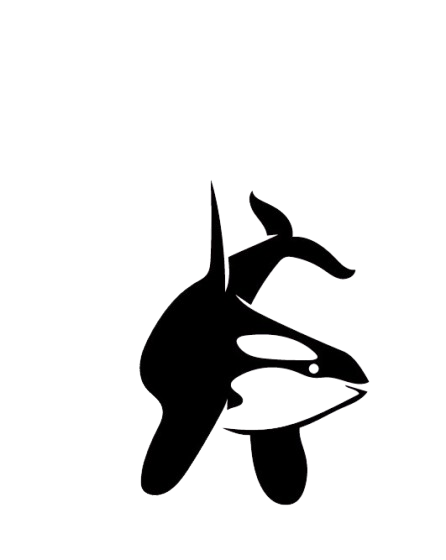
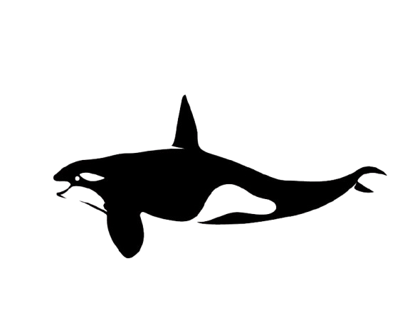

A clear idea.

Good practice
Good practice.
Thoughtful strategy, careful execution, and a human-centered approach for the stories and brands that deserve more care.


Good practice
Thoughtful strategy, careful execution, and a human-centered approach for the stories and brands that deserve more care.
